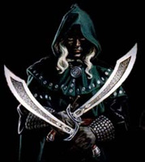

Forums galactiques > Assemblée Galactique : diplomatie officielle > guerre de toy/fin
Pages : 1
| latlante10 Respect diplomatique : 13  04/04 ETU 20:13 | Score : 0 Détails La guerre qui sévissait déjà depuis 1 an dans le système de Troy avait fait beaucoup trop de mort et les Grecs ont finit par douter de leur chef. C'est alors q'un commandant proposa un nouveau stratagème, Fabriquer une arme de dissimulation massive où des Kamikazes se cacheraient et quand les Troyens la feront entrer dans leur planète mère les hommes feront leur travail et détruiront les défenses des Troyens pour faire entrer les vaisseaux grecs. Ce stratagème fonctionna à merveille et leur de l'invasion Paris mourut et Helene fut contrainte de rerentrer dans son ancienne coalition où elle finit ses jours.
|
Pages : 1
Forums galactiques > Assemblée Galactique : diplomatie officielle > guerre de toy/fin